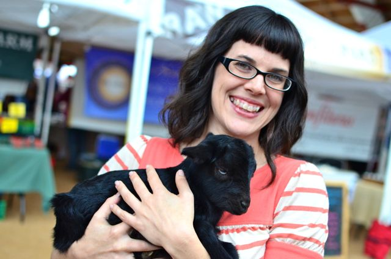

MY VEGAN STORY: CHRISTY MORGAN, THE BLISSFUL CHEF
December 27, 2013 Hey there! I hope you all had a wonderful holiday! Can you believe it’s almost 2014? I’m sure you all are thinking about resolutions to make for the New Year. Perhaps you want to be healthier, nicer to the environment, or live more compassionately? If you’re not already, maybe now is a good time to give veganism a try. Here to inspire you today in the next installment of the My Vegan Story series, is Christy Morgan, author of Blissful Bites: Vegan Meals That Nourish Mind, Body, and Planet, blogger at The Blissful Chef, and founder of Wellness Reboot, a revolutionary wellness coaching program that helps people build healthier, happier lives. She is one amazing woman and I’m constantly impressed by her spirit and drive when it comes to helping people. I’m so happy to have Christy here today to share her journey to veganism!

WHAT FIRST INSPIRED YOU TO GO VEGAN?
My best friend in college was vegetarian so I often ate vegetarian meals. I never cooked meat at home and loved faux chicken nuggets. After college I thought I would give being vegetarian a try just as an experiment. I had no idea what was actually happening to animals or the health benefits. When you are young you try crazy things lol. Then another friend showed me the Meet Your Meat video on PETA’s website and that was it for me. We decided to go vegan together and then I started teaching myself how to cook. That is what lead me to change career paths and go to culinary school.
DESCRIBE YOUR TRANSITION TO VEGANISM.
I had been vegetarian only a few months when she showed me that video. It was a complete overnight change. I was living in Los Angeles at the time so we reached out to the vegan community and found many people just like us! We had potlucks with other vegans and I fell in love with cooking for others. It was such a blessing to have my close friend there to hold my hand but also to have a community to support us. I can’t imagine how hard it is for people who live in cities where they have no other vegan friends. They have to start from scratch and build their community. I really applaud those vegans!
WHAT RESOURCES HELPED YOU IN YOUR TRANSITION?
11 years ago there weren’t as many documentaries, films or blogs but thankfully the internet existed and I found a few vegan recipe sites. Most the cookbooks back then were sort of hippy dippy but I would pick a few new recipes to try each week. Back then there were very few restaurants and none of the vegan convenience food we have now so teaching myself how to cook was my only option of surviving. That was another reason why I went to culinary school; so I could learn how to make delicious food. I chose to go to The Natural Epicurean, which at the time was only macrobiotic (it is a different school now with different owners and curriculum). I had no idea what macrobiotic meant but it was a mostly vegan culinary school (at the time it had a few fish classes where you didn’t have to touch, taste or prepare fish) and more affordable than the one in New York. And the rest is history they say!
It warms my heart to see how veganism has grown and to have so many resources available. There really is no valid excuse anymore to not be vegan. It’s not hard, it doesn’t matter where you live or your income. Just learn to cook healthful food and you are set!
WERE YOUR FRIENDS AND FAMILY SUPPORTIVE OF YOUR CHOICE TO GO VEGAN? IF THEY WERE NOT SUPPORTIVE, HOW DID YOU DEAL WITH THEM? ARE THEY MORE SUPPORTIVE NOW?
The only time I was around my extended family was during the holidays. The first few years I was vegan I brought my own food to Thanksgiving, but no one would really eat my dishes and I had leftovers for a week. The third year I brought Thai food from a restaurant. After that I stopped going to family functions revolved around food. It’s not that they weren’t supportive, it just wasn’t worth it to me to continually year and year see their health decline while I continued to glow and have amazing health. They had a perfect example right in front of them of how powerful their food choices were and they chose not to listen. One thing I’ve learned is you can’t force anyone to change, you can only walk your path and set a good example for your friends and family.
HOW LONG HAVE YOU BEEN VEGAN NOW?
11 years now. I went vegan in the fall of 2002 after graduating college and moving to LA. I did have a bump in the road during culinary school where I fell off the vegan wagon for a short time (after being vegan for 1.5 years). I mention this because ex-vegans get a lot of crap from the vegan police and there can be a lot of judgement toward them. Thankfully I saw the error of my ways and my conviction for the vegan way of life is even stronger the 2nd go round, making my whole life and career dedicated to helping others transition to a vegan diet. I wasn’t a “health vegan”, I protested on the street, I have always considered myself an ethical vegan, but hey I was young and easily influenced by other factors in my life. I am human. Am I weak? Am I a bad vegan? No, I’m just not perfect. I don’t feel like veganism is about being perfect, but trying to do the least amount of harm possible. I do my absolute best to do the least amount of harm in all areas of my life.
IF YOU COULD GIVE YOUR NEWLY VEGAN SELF ONE PIECE OF ADVICE, WHAT WOULD IT BE?
Once I went vegan I went straight to culinary school and learned how to cook in a whole foods, healthful way. I never had the opportunity to become a “junk food vegan” because I learned how to cook and there wasn’t really vegan junk food back then anyways. If I was to give any advice to a new vegan it would be to learn how to cook and steer clear of too much vegan junk food. I definitely know how to enjoy a cupcake I just don’t eat them everyday. Now that I’m into fitness I really wish I would have told my younger, vegan self to get into fitness sooner!!
LINK LOVE
website: http://theblissfulchef.com/
twitter: http://twitter.com/TheBlissfulChef